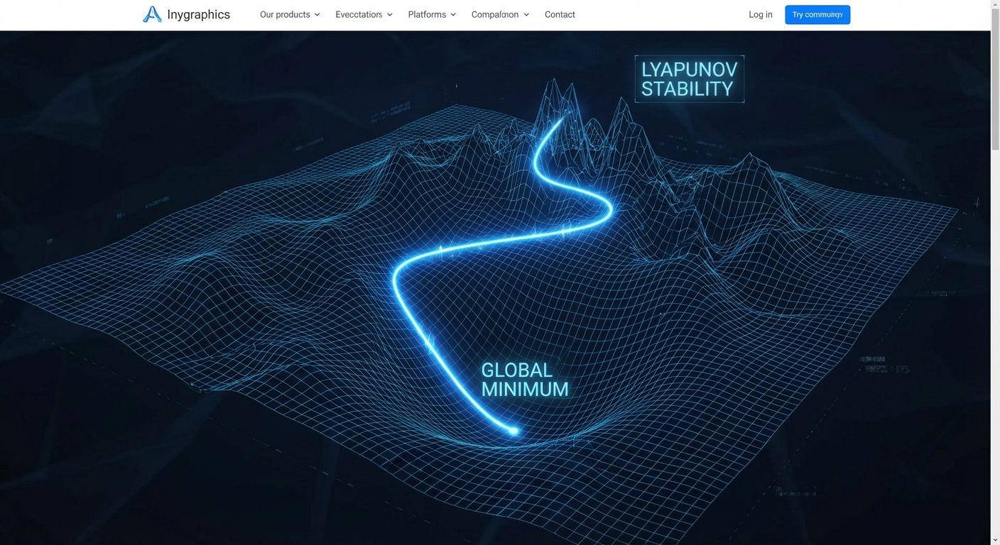

Interactive Simulator
Configure a layer definition on the left to see how the agent generates comprehensive analysis.
Executive Summary
One-Liner: A gating mechanism that allows information to flow selectively based on a learned linear projection.

Intuitive Analogy
Think of this layer like a volume knob for specific frequencies in an audio equalizer. The "gate" decides how loud each feature should be. If the gate is closed (0), the feature is silenced; if open (1), it passes through unchanged.
✅ Strengths
- Simple implementation
- Effective feature selection
- Vanishing gradient protection
⚠️ Limitations
- Adds parameters (W_gate)
- Linear projection limit
Formal Definition
Where ⊙ denotes the Hadamard (element-wise) product and σ is the sigmoid activation function.
Gradient Derivation
Gradient w.r.t Input (∂L/∂x):
Where g is the gate activation σ(xW + b).
Lipschitz Analysis
The forward function is Lipschitz continuous. The Lipschitz constant is bounded by:
TensorFlow.js Implementation
class GatedAttentionUnit extends tf.layers.Layer {
constructor(config) {
super(config);
this.units = config.units;
}
build(inputShape) {
this.wGate = this.addWeight(
'w_gate',
[inputShape[inputShape.length - 1], this.units],
'float32',
'glorotUniform'
);
this.bGate = this.addWeight(
'b_gate',
[this.units],
'float32',
'zeros'
);
}
call(inputs) {
return tf.tidy(() => {
// Linear projection for gate
const gateLogits = tf.add(tf.matMul(inputs, this.wGate), this.bGate);
const gate = tf.sigmoid(gateLogits);
// Element-wise multiplication
return tf.mul(inputs, gate);
});
}
}
Lyapunov Stability Analysis

Lyapunov Function Candidate: V(θ) = L(θ) - L(θ*)
Stability Conditions
- Learning rate η < 2/L where L is the Lipschitz constant of the gradient.
- Gate saturation (g ≈ 0 or g ≈ 1) creates plateaus in the loss landscape.
Numerical Stability
Overflow Risk: Low. Sigmoid bounds gate values to (0, 1).
Underflow Risk: Moderate. If gate values approach 0, gradients for the main signal path vanish.
Recommendation: Initialize bias b_gate to a small positive value (e.g., 1.0) to start with gates open.